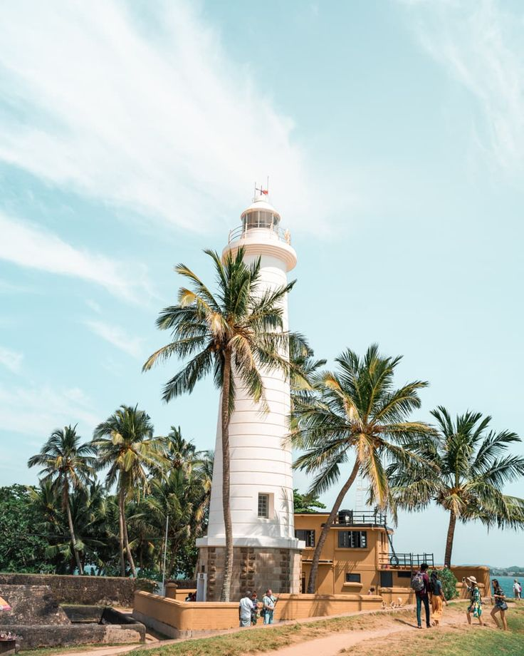

Sigiriya
Sigiriya is an ancient rock fortress located in the northern Matale District near the town of Dambulla in the Central Province, Sri Lanka. It is a UNESCO World Heritage Site known for its stunning frescoes, landscaped gardens, and the remains of an extensive network of fortifications.

Kandy
Kandy is a picturesque city nestled in the hills of the Central Province. It is famous for the Temple of the Tooth, which houses the sacred tooth relic of Buddha. Kandy is also known for its lush botanical gardens and scenic Lake Kandy.

Galle
Galle is a historic coastal city located in the Southern Province. It boasts a well-preserved Dutch fort, charming streets, and beautiful beaches. Visitors can explore the fort's ramparts and enjoy the vibrant atmosphere of Galle's Old Town.